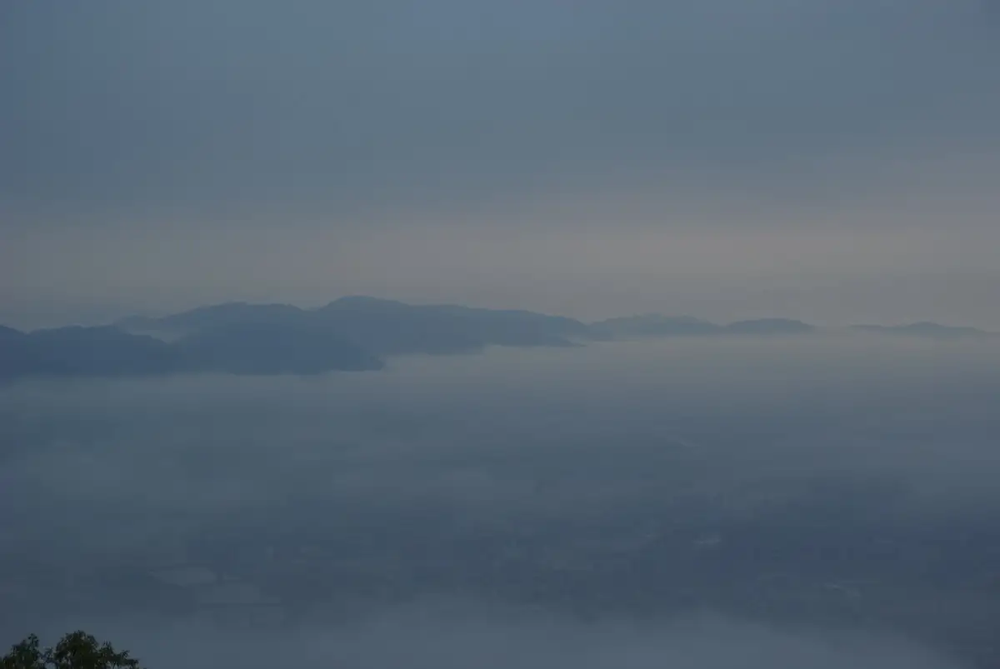
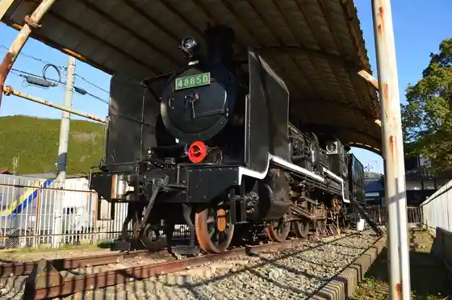
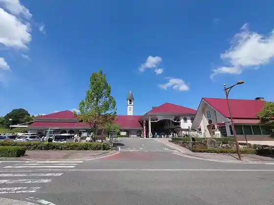
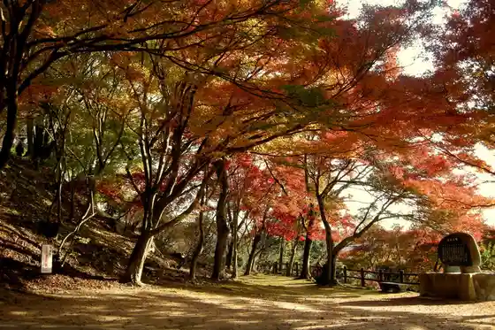
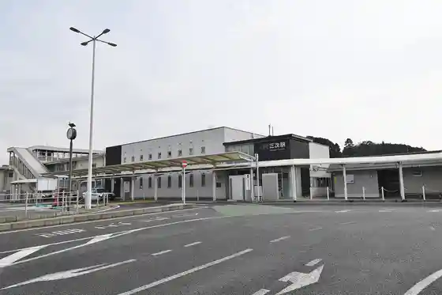

Miyoshi
Miyoshi · Hiroshima
Miyoshi
Highlighted on the Hiroshima map.

Stay
Hotel Rutoin Miyoshi Ekimae
Miyoshi Gu Land Hotel
Hotel Arufawan Miyoshi
Bincho Sumi Baths Hotel Kuraunhiruzu Miyoshi
Bijinesu Hotel Hakucho So
Inaka Yado Kaze no Michi
Tabist Raika Hiroshima Miyoshi
Dining
Sandaime Amimoto Uosen Suisan Miyoshi Ekimae Mise
HIROSHIMA NOH BEER Kotchan Tokoro
Mirasaka Trevis
Tamu Shoten Miyoshi Ekimae Mise
Ja Ken
Hiroshima Miyoshi Wainarii Babekyu Garden
Tonkatsu Waka Ha
Yu
Torigoya
Ton Taira Shokudo
Nagahama Ramen Hakata Ya Miyoshi Mise
CALM
Masato Kanayaki Shuka
Kafe no Eru
Yume Workshop Nemu no Ki
Guriin Mugi Mugi Toretta Miyoshi
Onsen
Hotel Rutoin Miyoshi Ekimae Dansei Public Bath
Bincho Sumi Baths Hotel Kuraunhiruzu Miyoshi Public Bath
Sights
Koya Yama
Miyoshi Mo no no Ke Museum

Hiroshima Miyoshi Wainarii

Ozeki Yama Park

Miyoshi Eki
